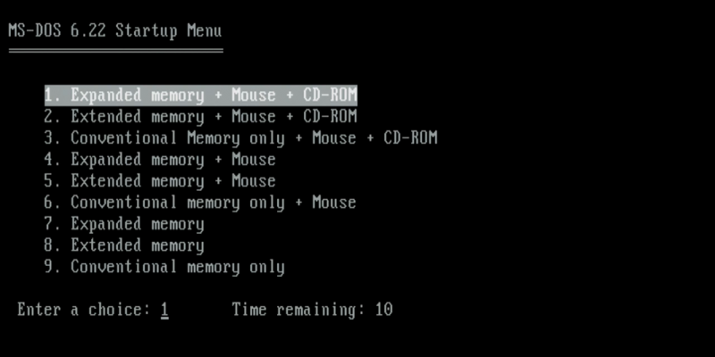

Durante la década de 1970, el desarrollo del software vivió un nuevo impulso gracias a dos factores fundamentales: el surgimiento del mercado del software comercial y el inicio de la computación personal. Estos dos elementos transformaron la informática, permitiendo que el software llegara a empresas, hogares y personas comunes, más allá de los grandes centros de investigación o corporaciones tecnológicas.
Trabajo subida de nota
Auge del Software Comercial y Personal (1970–1980)
Aparición del software como producto comercial
Software propietario
Hasta principios de los 70, la mayoría del software era desarrollado internamente por universidades, gobiernos o fabricantes de hardware. Sin embargo, con el crecimiento de la demanda de soluciones informáticas específicas, comenzó a desarrollarse un mercado en el que el software se vendía como un producto independiente. Las empresas comenzaron a crear y distribuir programas empaquetados para distintas funciones: contabilidad, administración, bases de datos, diseño, etc.
Esta etapa marca la consolidación del software propietario, en el que el código fuente no está disponible para el público, y los usuarios adquieren una licencia de uso. Este modelo permitía a las compañías proteger sus desarrollos y establecer una industria rentable alrededor del software. Los programas empezaron a distribuirse en disquetes o cintas, acompañados de manuales, y eran instalados en las primeras computadoras empresariales y personales.
Nacimiento de la informática personal
Computadoras Personales
A finales de los 70, surge un cambio trascendental: la llegada de las computadoras personales (PCs). En 1975, Bill Gates y Paul Allen fundaron Microsoft, desarrollando un intérprete de BASIC para el Altair 8800, uno de los primeros microordenadores para aficionados. En 1976, Steve Jobs y Steve Wozniak fundaron Apple, lanzando el Apple I y, posteriormente, el Apple II, uno de los primeros ordenadores personales con éxito comercial.
Estos avances hicieron que las computadoras dejaran de ser dispositivos exclusivos de grandes empresas o instituciones para empezar a formar parte del hogar. Este nuevo mercado impulsó una explosión en la demanda de software personal: procesadores de texto, hojas de cálculo, videojuegos, sistemas operativos sencillos, etc.
Popularización de sistemas operativos personales
Sistemas Operativos para el uso doméstico
Con el crecimiento del mercado de computadoras personales, también surgieron los primeros sistemas operativos orientados al usuario doméstico. En esta época se desarrollaron sistemas como CP/M y, posteriormente, MS-DOS, que sería distribuido por Microsoft junto con los primeros ordenadores IBM PC a partir de 1981 (aunque fuera de esta década, la base tecnológica se sentó en los años 70).
Esto facilitó que los usuarios pudieran controlar su equipo, administrar archivos y ejecutar múltiples programas. Así, el sistema operativo pasó de ser una herramienta técnica a una interfaz de usuario más común.
En conjunto, estos avances hicieron que el software fuera más accesible, masivo y variado, transformando para siempre la relación entre personas y tecnología.
Imágen de MS-DOS

Pregunta Verdadero-Falso
Indica si cada afirmación es verdadera (V) o falsa (F), basándote en la lectura anterior.
Retroalimentación
Falso
Retroalimentación
Verdadero
Retroalimentación
Falso
Retroalimentación
Verdadero
Obra publicada con Licencia Creative Commons Reconocimiento Compartir igual 4.0